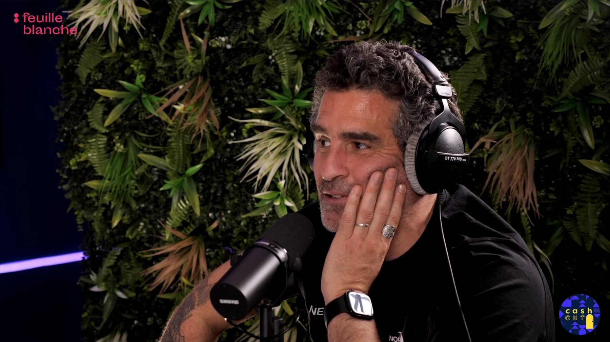
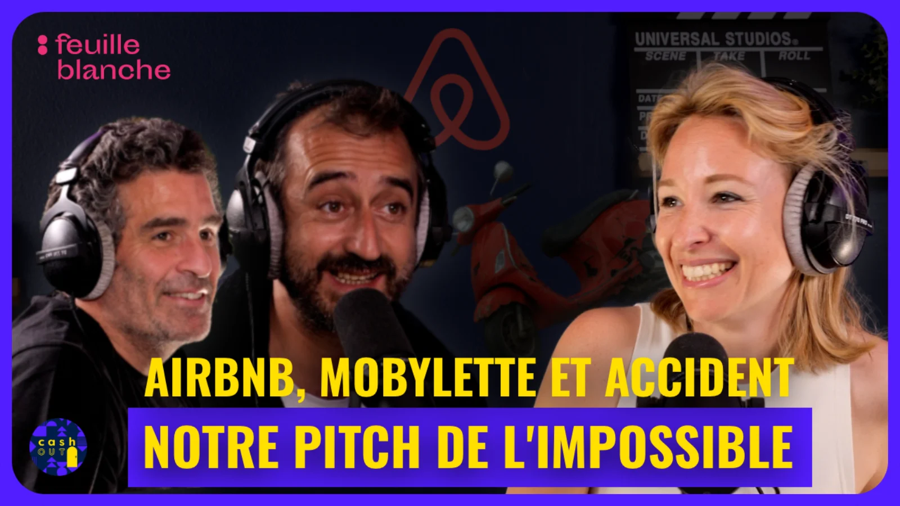

Feuille Blanche - Montage vidéo
Production d'un package éditorial complet pour diffusion web : miniature, montage principal et version verticale pensée pour les usages mobile-first.

Résumé du projet
Projet réalisé pour Feuille Blanche dans un contexte de sélection en alternance. L'objectif était de produire un rendu vidéo exploitable en diffusion réelle, avec une version longue et une déclinaison courte optimisée pour les plateformes verticales.
Au-delà du montage, le travail demandait une logique éditoriale complète : accroche visuelle, rythme de lecture, adaptation des formats et cohérence de l'identité de la chaîne.
Enjeu du projet
L'enjeu ne résidait pas seulement dans la qualité d'un montage isolé, mais dans la capacité à penser un même contenu pour plusieurs points d'entrée : la miniature pour attirer, la version longue pour installer la conversation, et la version courte pour capter rapidement l'attention sur mobile.
Objectif du projet
Le brief consistait à monter un épisode de podcast filmé, avec une mise en image centrée sur les personnes qui prennent la parole. L'enjeu était de garder une continuité visuelle propre, un rythme fluide et une narration claire, tout en respectant l'identité visuelle de la chaîne Cash Out.
- Rendre l'épisode lisible du début à la fin, sans rupture de rythme
- Conserver une hiérarchie claire entre intervenants, plans et informations visuelles
- Produire un format court 9:16 autonome, compréhensible sans contexte supplémentaire
Livrables réalisés
- Miniature principale : respect de la charte Cash Out, reprise des codes visuels existants et optimisation du contraste pour l'accroche.
- Montage principal : épisode de podcast filmé, structuré autour des prises de parole avec plans caméra majoritairement centrés sur les intervenants.
- Montage court vertical : version 9:16 d'environ 1 minute, pensée pour Instagram Reels, TikTok et Shorts.
Contraintes de réalisation
- Respecter un style sobre, sans sur-effets, pour garder l'émission au centre
- Préserver la lisibilité des échanges dans une discussion à plusieurs intervenants
- Condenser un passage fort pour le format vertical sans perdre le sens
- Livrer un rendu prêt à publier sur des plateformes aux usages différents

Approche montage
Le montage principal a été construit autour des interventions orales : enchaînements propres entre plans caméra, gestion du rythme de parole et maintien de la lisibilité des échanges. Le format court a ensuite été reconstruit en vertical pour conserver l'impact du passage sélectionné sur mobile.
- Sélection des plans selon la clarté de l'intervenant et l'intention du propos
- Nettoyage des transitions pour éviter les coupes "brutales" et garder une écoute fluide
- Rééquilibrage du rythme entre moments d'explication et moments d'accroche
- Reframing et timing adaptés au 9:16 pour maintenir l'attention sur mobile
La version verticale n'était pas un simple recadrage de l'épisode principal : elle devait fonctionner comme un contenu autonome, compréhensible rapidement et suffisamment fort pour donner envie d'aller plus loin.
Pipeline technique
- Final Cut : dérush, montage principal, déclinaison verticale et exports finaux
- Pixelmator & Photoshop : création de la miniature (contraste, hiérarchie visuelle, lisibilité mobile)
- Logic Pro : mixage final (équilibrage voix, correction des niveaux, homogénéisation globale)
Difficultés & arbitrages
- Maintenir l'énergie du format web sans dénaturer le ton de l'émission
- Trouver le bon niveau de densité dans la version courte pour rester compréhensible
- Conserver une continuité visuelle entre miniature, version longue et version verticale
L'arbitrage principal consistait à garder une identité cohérente entre les livrables tout en acceptant que chaque format a son propre rythme, sa propre hiérarchie et sa propre logique d'attention.
Résultat & apprentissages
Ce projet m'a permis de consolider un workflow de monteur vidéo orienté diffusion web, du visuel d'accroche jusqu'au mixage final et à l'adaptation multi-plateformes.
- Validation de ma capacité à livrer plusieurs formats cohérents sur un même contenu
- Renforcement de ma méthode de montage orientée usage réel des plateformes
- Montée en précision sur l'enchaînement image/son dans un contexte de sélection professionnelle
Ce que ce projet m’a permis de développer
- Capacité à penser un contenu comme un ensemble éditorial cohérent, pas comme un export unique
- Capacité à adapter le rythme et le cadrage à des plateformes aux usages différents
- Maîtrise d'un workflow complet image, son et visuel d'accroche
- Compréhension concrète des contraintes de diffusion web et social media